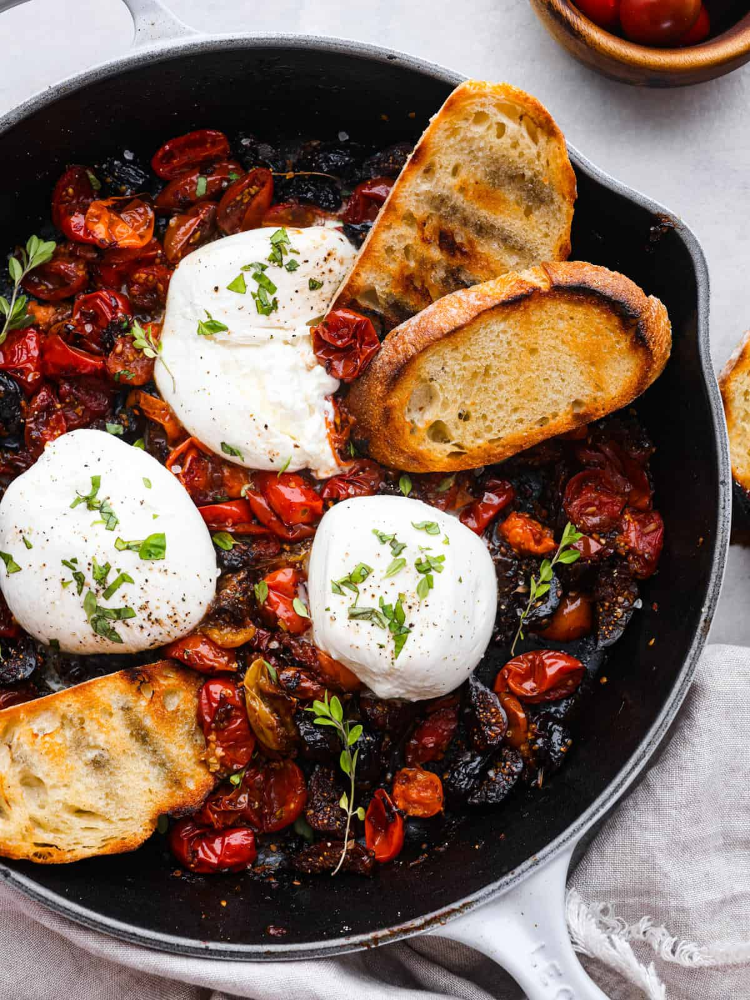
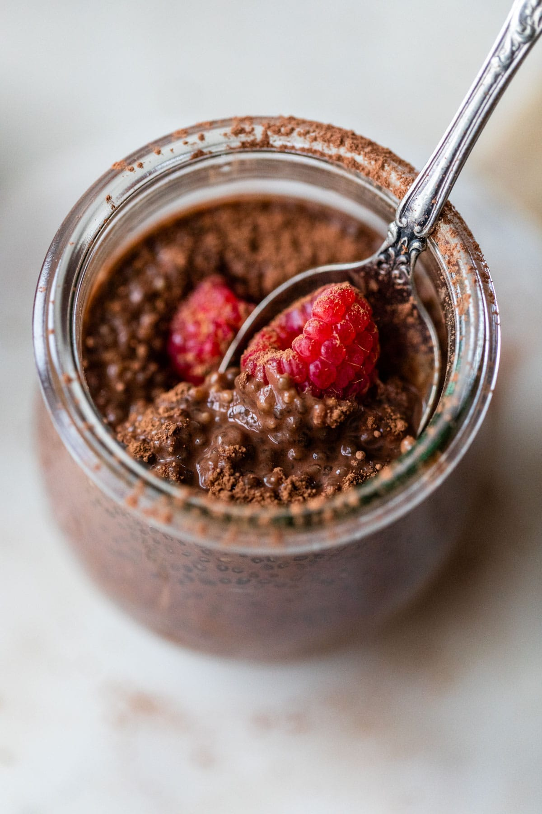

Making bakery-worthy chocolate chip cookies is much easier than it seems. You'll find a detailed ingredient list and step-by-step instructions in the recipe below, but let's go over the basics:
Are you tired of being misled by your friends or family when they say the new resturant in town is "good"? Feeling bummed out because you just spent sixty plus dollars on a mediocre meal when you could have made the same thing at home that's ten times better? Then you have come to the right place! Here at Lo's Kitchen, we know it's a jab in the gut when you've just spent the rest of your cash on some mid burgers, and that's why this website was created for those "hard to make" recipes you think you can only get by dining out. Not experienced in the kitchen? That's okay!! The recipes on this site are relatively easy, no matter your cooking experience! (But seriously make sure you learn or get familar with some basic safety and kitchen terms and phrases! Trust me.) The recipes can range from very easy, so harder ones. So, grab your friend, roomate, mom, sister, boyfriend, your dog??... And make some good food you feel proud to eat!
 